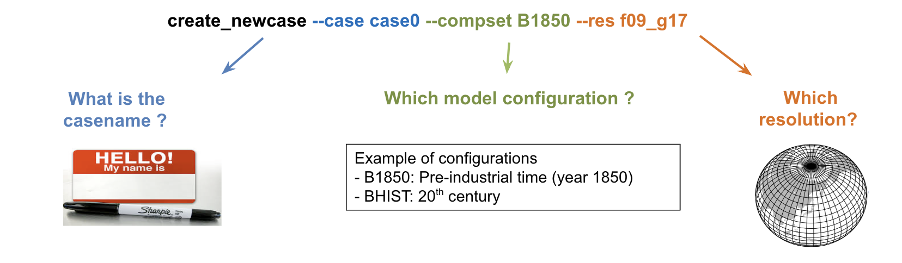

Running CESM (create_clone)#
This is a brief introduction to running the climate model CESM. This will walk you through the fundamentals of running CESM.
In this notebook , we will run a simulation. Later, we will look at the data you produced.
0. Prerequisite: running a cell.#
In this tutorial, you will often hear often the expression run a cell. In the context of a notebook, running a cell refers to executing the code written within a specific cell in the notebook.
Exercise 0
Practice running the cell below. It means click on the cell and then., press Shift-return.
Run the same cell several times. What happens?
echo 'Wait for 5 seconds'
sleep 5
1. Creating a CESM case#
CESM experiments start with creating a case with a specific configuration of CESM (compset) and at a particular resolution.
For instance, here is the command to create a CESM case called case0 with
compset:
B1850resolution:
f09_g17

Figure: Syntax of create_newcase
Due to time constraints, we will create a new case by cloning an existing case in CESM. The command is create_clone and the result is somewhat similar to create_newcase.
If you plan to use CESM in the future, we recommend using the create_newcase command until you have a good understanding of CESM.
Exercise 1
Create a case (a simulation) using the create_clone command. The simulation you want to clone is located at: /home/hannay/cases/case0.
Customize your casename (each student picks a different number) and run the cell to issue the command.
create_clone --case ~/cases/case3 --clone /home/hannay/cases/case0 --keepexe --cime-output-root /scratch/$USER
Great! You’ve created the default version of your case. Let’s wait for everyone before going to step 2.
2. Setting up the case#
The next step in running CESM is to setup the case. This is done by going into the case you just created and running ./case.setup.
The command ./case.setup sets up files that control the model’s behavior.
Exercise 2
Customize the cell below with your own case name. Then run the cell. This sets up the case.
cd ~/cases/case3
./case.setup
Great! You’ve now used the case.setup command to set up your case. Let’s wait for everyone before going to step 3.
3. Compiling the case#
CESM is written in a language called Fortran. Similar to English, Fortran is human readable. The computer doesn’t understand Fortran. It needs to be translated in a computer-readable code (strings of 0s and 1s).
Here is an example of fortran code
Exercise 3
Run the cell below. This compiles the case. Be aware that this can take a few minutes.
qcmd -- ./case.build
Again, this will take a few minutes. You’ll know this is complete when you see the line:
MODEL BUILD HAS FINISHED SUCCESSFULLY
If you see that, fantastic! You’ve built your first CESM case! Let’s wait for everyone before going to step 4.
4. Customizing a CESM case#
Adding some butterfly effect
If we submitted the simulation now, we would all get the same results.
Let’s add a small perturbation to the temperature (butterfly effect)
Example of a small perturbation
Temperature = 90F -> 90.0000000000001F
Exercise 4
Run the cell below. This adds some butterfly effect (a small T temperature).
Each student adds a different butterfly effect.
echo "pertlim = 0e-13" >> user_nl_cam
Let's wait for everyone before going to step 5.
5. Set the length of the run#
By default, cesm is set to produce 5-day simulations. Here, we modify the case to do a one-month simulation.
Exercise 5
Run the following cell to change the length of the simulation to one month.
./xmlchange STOP_OPTION=nmonths,STOP_N=1
Run the following cell to check the length of the simulation was properly set
./xmlquery STOP_OPTION,STOP_N
If you see:
STOP_OPTION: nmonths
STOP_N: 1
Great! You have set the case to run the model for one month. Let’s wait for everyone before going to step 6.
6. Running your case#
Running a case is also simple - we just issue the case.submit command. This will start by checking that we have all of the necessary input data for our run, and downloading whatever is missing, and then it will perform the actual simulation - which we’ve configured to run for one month.
Exercise 6
Submit your simulation.
./case.submit
Check the job is running
When you submit a simulation, it will be waiting in the computer until there is enough computer resources.
The command squeue allows you to make sure your simulation is in the queue or running.
squeue -u $USER
When this step finishes, the run will complete, then the ‘archive’ script will execute. You will see a few warning messages about ‘No such variable’ - these are normal, and can be ignored. The final lines should look like:
Submitted job case.run with id None
Submitted job case.st_archive with id None
If you see those, congratulations! You’ve run your first case – there’s a lot of text shown above, and we’ll cover it in more detail in another tutorial, and more information can also be found in the documentation.